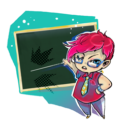

Co nowego w kursie japońskiego:
Zakończenie wakacyjnych kursów u Mizuu
Wakacyjne kursy u Mizuu jeden po drugim dobiegają końca i już niedługo będzie można zapisać się na zajęcia jesienne. Póki co, w różnych miejscach sieci ukażą się niektóre wyniki pracy jej uczniów - na pierwszy ogień poszedł rozdział mangi "Doraemon" opracowany dla uczących się języka japońskiego. Możecie go ściągnąć
tu. Mamy nadzieję, że będzie przydatnym i zabawnym dodatkiem do posiadanych przez was materiałów. Korzystajcie, podzielcie się ze znajomymi i czekajcie na więcej!
Sierpień 31st,2012
Recenzja podręcznika „Minna no Nihongo”
W kursie języka japońskiego benkyo.pl pojawiła się nowa recenzja nienowego i jakże popularnego na całym świecie podręcznika do nauki języka japońskiego: Minna no Nihongo. Zapraszam do przeczytania jak zwykle świetnej recenzji autorstwa naszego dobrego japońskiego ducha - Niltinco.
Lipiec 25th,2012
Kursy wakacyjne z Mizuu
Pasjonaci języka japońskiego!

Jest lato, niedługo wakacje, warto zainwestować w siebie i podszkolić swój japoński! Agnieszka-sensei w tym roku ma ciekawą ofertę kursów wakacyjnych m. in. z japońskiego, które znajdziecie na stronie
http://sites.google.com/site/nihongomizuu/home. Dla fanów kursu języka japońskiego
benkyo.pl przygotowała też specjalną ofertę - po wpisaniu przy rejestracji w pole "hasło" frazy "benkyou shiyou!" otrzymacie jedną godzinę zajęć zupełnie gratis. Wykorzystajcie więc wakacyjną labę na rozpoczęcie przygody z japońskim, poznanie nowych ludzi i... kanji!
Czerwiec 10th,2012
Recenzje podręczników do nauki języka japońskiego
Uważni czytelnicy benkyo.pl być może już zauważyli, że pojawił się nowy podrozdział w części "Na początek": Recenzje podręczników. Będą się tu pojawiać o wiele szersze, niż w dziale "Polecane wydawnictwa" opracowania, które w zamierzeniu mają Wam przedstawić różne wydawnictwa oraz ułatwić wybór jednego lub kilku z nich. Rozpoczynamy od recenzji dwóch popularnych w Polsce i na świecie podręczników: Genki 1 oraz Japoński - kurs podstawowy. Jeżeli więc jesteś jeszcze na etapie wyboru podręcznika, który (oprócz kursu benkyo.pl) posłuży Ci do nauki języka japońskiego, to jest to dla Ciebie pozycja obowiązkowa!
Kwiecień 15th,2012
Rozpoczynamy lekcję 10
Minęło trochę czasu od publikacji lekcji 9, czas więc na kolejną. Tym razem tematem przewodnim będzie: relacja a wytłumaczenie. Ponadto o tym, jak powiedzieć, że czegoś nie wolno lub że nie trzeba robić. Powiemy też o tym, w jaki sposób przesadzić po japońsku (np. z jedzeniem). Wszystko tradycyjnie podane w przystępnej formie. Zapraszam!
Październik 25th,2011
Najnowsze posty na forum
Pojawiła się nowa funkcjonalność w naszym kursie, ułatwiająca śledzenie na bieżąco tego, co się dzieje na naszym forum. Z prawej strony (w pasku bocznym) znajdziesz fragmenty pięciu najnowszych postów. Wystarczy kliknąć na temat, a zostaniesz automatycznie przekierowany na odpowiednią stronę forum.
Przy okazji namawiam gorąco wszystkich adeptów języka japońskiego i kultury japońskiej do korzystania z naszego forum. Jeżeli jeszcze się nie zarejestrowałeś - zrób to koniecznie i zacznij korzystać! Znajdziesz tam wiele interesujących rzeczy na temat Japonii, języka japońskiego i nie tylko. Jeżeli masz jakiekolwiek pytania dotyczące na przykład gramatyki japońskiej, pytaj śmiało.
Wrzesień 9th,2011
Nowe czytanki japońskie
W dziale "Czytanki japońskie" pojawiły się nowe krótkie opowiadania, idealne do ćwiczenia czytania hiragany. Aktualną listę wszystkich dostępnych opowiadań i czytanek znajdziesz na stronie Czytanki japońskie - zapraszam do lektury.
Wrzesień 9th,2011
Ostatnia część gramatyki w lekcji 9
W lekcji 9 pojawiła się ostatnia część gramatyki. Tym razem o tym, jak wymienić kilka spośród wielu rzeczy. Uważny czytelnik dopatrzy się analogii z wcześniejszą częścią w tej lekcji - tej o wymienianiu czynności. Wtedy mowa była o czasownikach, a teraz będziemy wymieniać rzeczowniki: "Między innymi to i tamto" - zapraszam.
Sierpień 21st,2011
Opowiadanie „Kaguyahime”
Kolejne opracowanie opowiadania japońskiego przez Szafkę. Tym razem pochodząca z X wieku "Kaguyahime" - legenda o zbieraczu bambusu i świetlistej księżniczce, oczywiście w wersji dla początkujących (a więc bardzo skróconej).
Sierpień 18th,2011
Opowiadanie pt. „Omusubi kororin”
Jako że BENKYŌ to również kurs japońskiego dla początkujących, a nie tylko tych średniozaawansowanych, oddaję do Waszej dyspozycji nowe opowiadanie. Zostało ono opracowane przez Szafkę, która zgłosiła się z propozycją pomocy w opracowywaniu kursu. Możecie sami potwierdzić na podstawie opracowanego przez nią opowiadania pt. "Omusubi kororin", że poszło jej znakomicie.
Sierpień 13th,2011
Odwiedzający tę stronę najczęściej szukali:
słownik polsko japoński (9149), słownik japońsko polski (7232), słownik japonski (4956), praca w japonii (2507), hiragana (2321), imiona po japońsku (2303), japonia ciekawostki (2074), kanji (1692), japońskie emotikony (1333), slownik polsko japonski (1223)